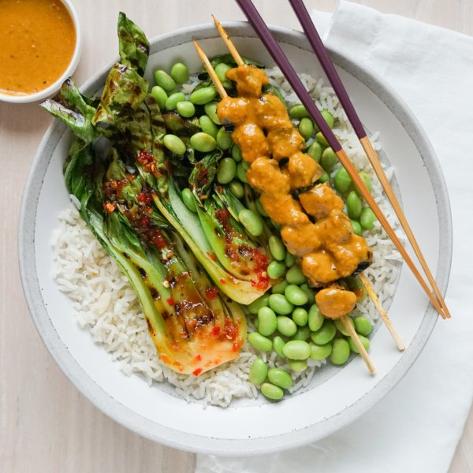

Grilled Portobello Peanut Satay with Bok Choy, Edamame & Coconut Rice

Nutrition (per serving)
688.8 kcalCalories
23 gProtein
67.7 gCarbs
39.8 gFat
Full nutrition table
| Calories | 688.8 kcal |
| Total fat | 39.8 g |
| Saturated fat | 20.3 g |
| Trans fat | 0 g |
| Cholesterol | 0 mg |
| Sodium | 104.4 mg |
| Carbohydrates | 67.7 g |
| Fiber | 9.9 g |
| Sugars | 16.1 g |
| Protein | 23 g |
| Potassium | 1450.3 mg |
| Calcium | 212 mg |
| Iron | 6.7 mg |
| Vitamin A | 296 IU |
| Vitamin C | 61.6 mg |
| Vitamin D | 8.4 IU |
Cookware
Ingredients
- 4baby bok choy
- 1 (13.5 fl oz) cancoconut milk
- 2 cupsedamame
- 2 (1 inch) piecesginger root
- 1 cupjasmine rice
- 1lime
- 4 capsportobello mushrooms
- brown sugar
- chili-garlic sauce
- curry powder
- fish sauce
- natural peanut butter
- neutral vegetable oil
- salt
- soy sauce
- turmeric, ground
Steps
- If using wooden skewers, place 8-12 skewers in a shallow dish of water to soak until you are ready to use them.
- Using a strainer or colander, rinse the rice under cold, running water, then drain and transfer to a medium saucepan. Add coconut milk, water, and salt; bring the mixture to a boil over high heat.1 cup jasmine rice
1 (13.5 fl oz) can coconut milk
⅔ cup water
½ tsp salt - Meanwhile, wash and dry the fresh produce.1 lime
2 (1 inch) pieces ginger root
4 caps portobello mushrooms
4 baby bok choy - Once the liquid comes to a boil, stir the mixture, cover the saucepan, and reduce heat to low. Cook rice until liquid is fully absorbed, 15-18 minutes. Once done, remove rice from the heat and let it stand, still covered, for 5 minutes.
- While the rice is cooking, juice lime into a small bowl.
- Peel and mince ginger. Add to the bowl with the lime juice along with peanut butter, water, sugar, fish sauce, soy sauce, chili-garlic sauce, turmeric, and curry powder. Whisk to combine the satay sauce.¼ cup natural peanut butter
2 tbsp water
4 tsp brown sugar
1 tbsp fish sauce
1 tbsp soy sauce
½ tsp chili-garlic sauce
½ tsp turmeric, ground
¼ tsp curry powder - Remove stems from portobello mushrooms and carefully scrape out the gills; medium dice. Place in a medium bowl, add half of the satay sauce, and stir to coat. (Reserve remaining sauce for serving.)
- Preheat a grill pan or regular skillet over medium-high heat.
- While the pan heats up, thread mushrooms onto skewers and place on a plate. (Alternatively, you can cook the mushroom pieces directly on the grill pan without using skewers.)
- Once the pan is hot, working in batches if necessary, add mushrooms and grill, flipping once, until tender and charred 3-4 minutes. Return to the plate.
- Meanwhile, place edamame in the colander and rinse under hot, running water (from the tap) to defrost; set aside to drain.2 cups edamame
- Place oil, chili-garlic sauce, fish sauce, and soy sauce in another medium bowl. Whisk to combine the spicy marinade.2 tbsp neutral vegetable oil
2 tbsp chili-garlic sauce
1 tbsp fish sauce
1 tbsp soy sauce - Trim and cut bok choy in half lengthwise. Add to the bowl with the spicy marinade and gently toss to coat.
- When the mushrooms are done, working in batches if necessary, add bok choy to the grill, and cook, flipping once, until tender and charred 3-4 minutes. Once done, add to the plate with the mushrooms. (Reserve any leftover marinade in the bowl for serving.)
- To serve, divide coconut rice, bok choy, edamame, and mushroom skewers between plates. Drizzle reserved satay sauce over mushrooms and reserved spicy marinade over bok choy. Enjoy!